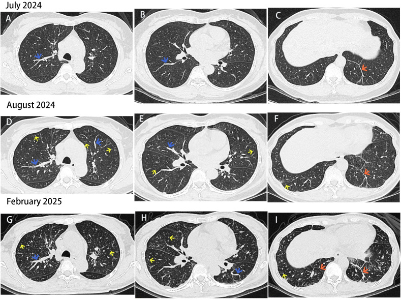

Ficha del catálogo
Linfangitis carcinomatosa
- Sistema
- Respiratorio
- Modalidad
- TC
- Región
- Tórax
- Dificultad
- Avanzado
Diseminación tumoral a través de los linfáticos pulmonares, habitualmente desde carcinomas de mama, pulmón, estómago o páncreas. Produce disnea progresiva desproporcionada a los hallazgos de la radiografía simple. Su reconocimiento indica enfermedad avanzada y cambia el enfoque terapéutico.
Técnica
Tomografía de alta resolución con cortes finos, complementada con estudio con contraste para valorar adenopatías y el tumor primario.
Qué observar
- Engrosamiento nodular e irregular de los septos interlobulillares
- Engrosamiento de los haces broncovasculares con aspecto arrosariado
- Conservación de la arquitectura del lobulillo pulmonar secundario
- Distribución unilateral o asimétrica en muchos casos
- Adenopatías hiliares y mediastínicas asociadas
- Derrame pleural acompañante frecuente
Hallazgos
Engrosamiento septal e intersticial nodular con distribución asimétrica, sin distorsión arquitectural, acompañado de adenopatías y derrame.
Perlas
El engrosamiento septal nodular e irregular la distingue del edema pulmonar, donde el engrosamiento septal es liso y simétrico. La asimetría y la falta de respuesta a diuréticos refuerzan la sospecha.
Diagnóstico diferencial
- Edema pulmonar intersticial
- Engrosamiento septal liso y simétrico que responde a diuréticos.
- Sarcoidosis
- Nódulos perilinfáticos con adenopatías simétricas y predominio superior.
- Fibrosis pulmonar
- Distorsión arquitectural con panalización y bronquiectasias de tracción.
Simuladores
- Edema por sobrecarga en el paciente oncológico
- Neumonitis por fármacos
- Infección intersticial
Por modalidad
- RX
- Patrón reticulonodular inespecífico
- TC
- Define el engrosamiento septal nodular y su distribución
Protocolo
Alta resolución con cortes finos sin contraste, más adquisición con contraste para valorar mediastino y buscar el tumor primario.
Clasificación
Errores frecuentes
- Confundirla con edema pulmonar y tratar solo con diuréticos
- No valorar la simetría del engrosamiento septal
- Omitir la búsqueda del tumor primario en el mismo estudio

linfangitis carcinomatosa septos interlobulillares diseminacion linfatica metastasis disnea oncologia